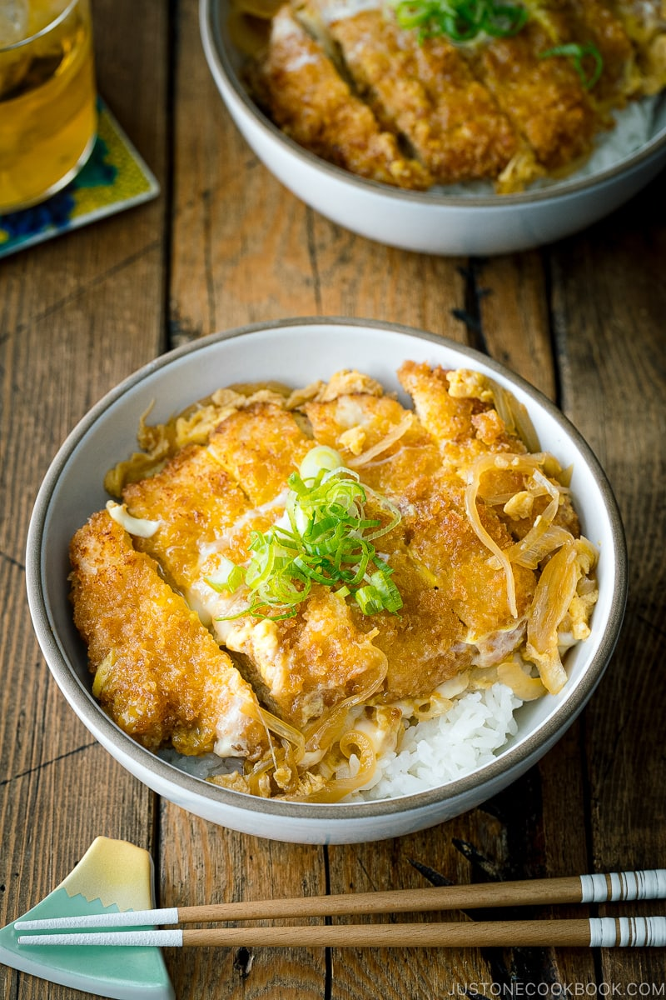

Katsudon is a Japanese pork cutlet rice bowl made with tonkatsu, eggs, and sautéed onions simmered in a sweet and savory sauce. It‘s a one-bowl wonder and true comfort food!
The word “katsudon” is a portmanteau, or a blending of two separate Japanese words. “Katsu” comes from “tonkatsu,” or breaded, fried cutlet, and “don (丼)” comes from “donburi” (丼ぶり), which translates to “large bowl.”
This dish is primarily made up of layers of steamed rice, breaded pork cutlet, and an umami-rich sauce. There are many versions of katsudon based on the region, but everyone seems to love the addition of simmered onions and egg poured on top.